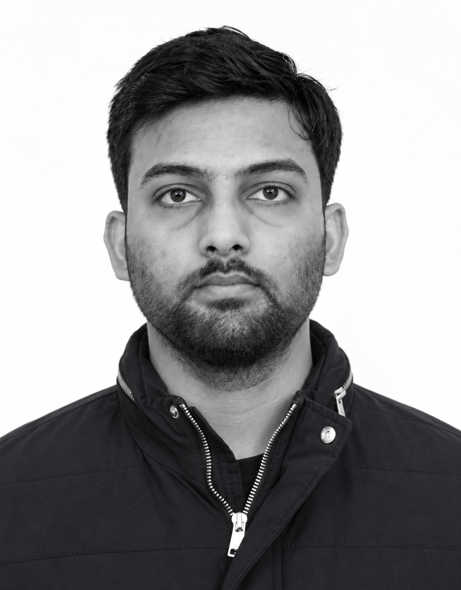

Akash Pal
How health shapes the decisions households make.
PhD candidate in Economics at IIT Roorkee, working on health economics, the economics of households, and microeconometrics.

- Roorkee, India
- Indian Institute of Technology Roorkee
- ORCID
- ResearchGate
- X
About
Research focus
My current work studies health state dependence in decision making, especially in the context of occupational health risks.
Background
Research Assistant at ISID, Delhi, with internships at ZIGRAM Data Technologies and RIS, Delhi. MSc in Economics from IIT Roorkee; BSc in Mathematics from Dr. Bhimrao Ambedkar University, Agra.
Methods
Microeconometrics and text-as-data approaches, such as structural topic modeling of parliamentary records.
Presented at
- Indiana University (ISSI’22)
- IIM Ahmedabad (IMRC’25)
- IGIDR Mumbai (CoRE’25)
- MIDS Chennai (DC’25)
- NIT Goa (TAES’25)
- VVGNLI Noida
- SANEM Dhaka (SAEC’23, ’25)
Accepted for presentation
- University of Vienna (COMPTEXT 2025)
- University of Iceland (NHESG’26)
- University of Tasmania (AHES’26)